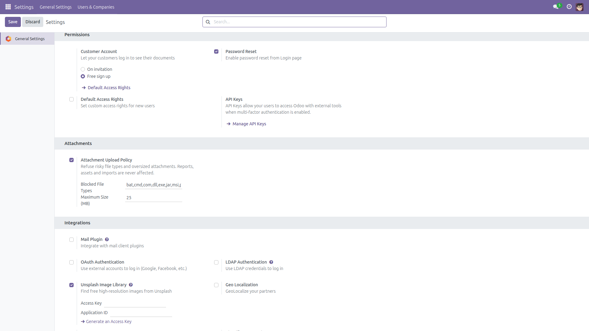

Risky files never reach your database.
Odoo lets anyone attach anything, of any size — executables, scripts and half-gigabyte videos land in your database and every backup you take. This module adds the upload policy Odoo does not ship: a blocked file-type list and a maximum size, enforced wherever users attach files, including the chatter and Discuss. Free and open source (LGPL-3), Odoo 14.0 through 19.0.

Settings → General Settings → Attachments: choose the blocked file types and the maximum size. Reports, assets and imports are never affected.
base_setup is required. Sensible defaults apply immediately.exe,bat,msi) — leave empty to allow every type.Identical behavior on every supported series (14.0 – 19.0).
Questions, bugs or feature requests?
Email f.ashraf.dev1@gmail.com — I read and answer every message.
License: LGPL-3 · Source on GitHub · Issues and contributions welcome.